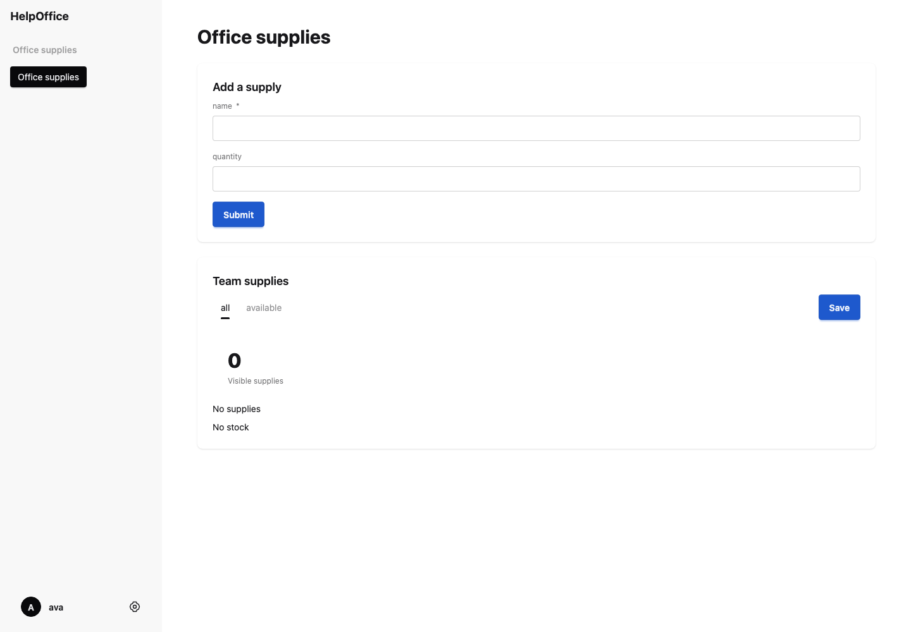
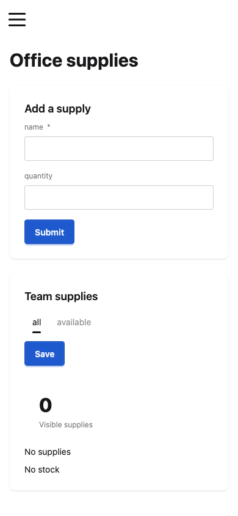

Passed requested browser audits; compiler/tests/fixtures/construct-help-first-profile.can


{
"schema": "can.dev.frontend-capture.v1",
"source": "compiler/tests/fixtures/construct-help-first-profile.can",
"executionRoot": "/private/var/folders/5x/bpszcvmj1tddmjp35y21dt680000gn/T/can-frontend-snapshot-vp9zusor",
"scope": "actual compiled dev preview; requested routes and read-only browser audit",
"routes": [
"/"
],
"generation": "not-tested",
"visualVerdict": "Assistant inspected desktop and mobile screenshots: form labels and empty-state content are legible; cards and controls stack within the mobile viewport without clipping. Screenshots cover the empty state; populated rows and interaction states were not visually exercised.",
"examples": {
"schema": "can.dev.example-run.v1",
"session": "ba23572a27bd8c50d99f21a593454d2915d8321f97ccc26c",
"revision": "r1",
"source_revision": "sha256:fae47477ace36805298eaef674ccc0e5a9c50e76c621f306d0ac70b31d375ffc",
"serving_build": "preview-905d5423-6312-48a9-9c77-24c61a7907fa",
"artifact_digest": "9ae0bbce34a922c43d8ca092a8e06a766eb5a9db8137deac3610aed3551136da",
"run_id": "91aa1b94-55d7-446c-bd40-42226dcb3a89",
"current": true,
"ok": true,
"executed": 4,
"summary": {
"total": 4,
"passed": 4,
"failed": 0,
"setupFailed": 0,
"unsupported": 0
},
"focus": null,
"failures_retained": 0,
"failures_omitted": 0,
"replay": {
"available": false,
"reason": "no_restore_capsule"
}
},
"pages": [
{
"viewport": "desktop",
"route": "/",
"pageErrors": [],
"consoleErrors": [],
"failedResources": [],
"httpErrors": [],
"status": 200,
"contentType": "text/html;charset=utf-8",
"title": "Office supplies — HelpOffice",
"audit": {
"mainVisible": true,
"canonicalStylesheetLoaded": true,
"horizontalOverflow": false,
"controlCount": 8,
"unlabelledControls": [],
"imageCount": 0,
"brokenImages": 0,
"imagesMissingAlt": 0
},
"screenshot": "desktop-01.png"
},
{
"viewport": "mobile",
"route": "/",
"pageErrors": [],
"consoleErrors": [],
"failedResources": [],
"httpErrors": [],
"status": 200,
"contentType": "text/html;charset=utf-8",
"title": "Office supplies — HelpOffice",
"audit": {
"mainVisible": true,
"canonicalStylesheetLoaded": true,
"horizontalOverflow": false,
"controlCount": 8,
"unlabelledControls": [],
"imageCount": 0,
"brokenImages": 0,
"imagesMissingAlt": 0
},
"screenshot": "mobile-01.png"
}
],
"failures": [],
"ok": true,
"check": {
"schema": "can.dev.check.v1",
"session": "ba23572a27bd8c50d99f21a593454d2915d8321f97ccc26c",
"revision": "r1",
"source_revision": "sha256:fae47477ace36805298eaef674ccc0e5a9c50e76c621f306d0ac70b31d375ffc",
"current": true,
"evidence": {
"capture_complete": true,
"analysis_complete": true,
"diagnostics_reported": 0,
"diagnostics_omitted": 0,
"diagnostics_service_omitted": 0
},
"focus": null,
"next_diagnostics": null,
"preview": "ready",
"preview_reason": null,
"state": "valid"
},
"revision": "r1",
"source_revision": "sha256:fae47477ace36805298eaef674ccc0e5a9c50e76c621f306d0ac70b31d375ffc",
"serving_build": "preview-905d5423-6312-48a9-9c77-24c61a7907fa",
"app": "HelpOffice",
"cleanup": {
"owned": true,
"released": true,
"note": "Owned endpoint absence verified after stop acknowledgement failure"
},
"runtimeScope": "Frozen snapshot; ongoing live Interfaces edits excluded; see frontend-snapshot.json metadata"
}